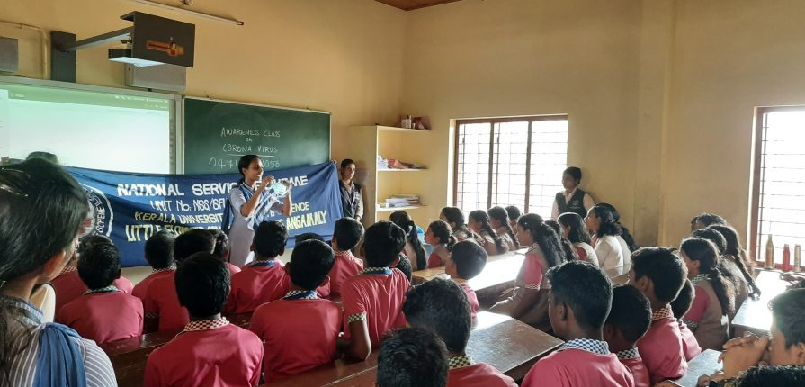
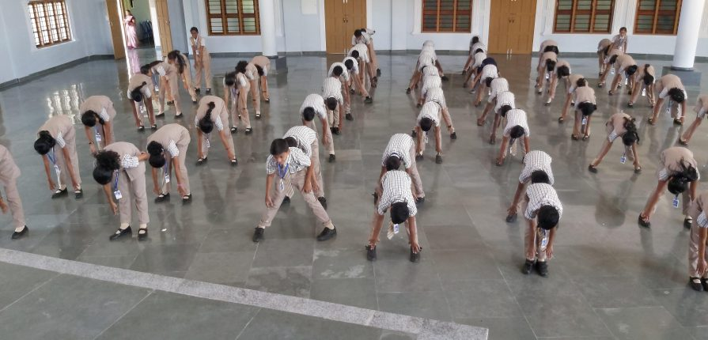

campus life of xavier's school
clubs and activities
St. Xavier offers a wide range of opportunities both within and beyond the curriculum. We offer extra-curricular opportunities with a vision to grow the range of experiences for students, encouraging them to become intellectually competent, committed to doing justice, more loving, and more religious. Some clubs are meant to be just for fun and offer a great way to grow socially and make new friends, while others can be a great way to develop and expand leadership skills. There is a club fair each year in the Ellis Gym right after the start of the school year where students can learn more about clubs that may interest them. You can also email the club moderator at any time to find out more information about a club. Announcements are made during the week letting students know when clubs are meeting and any new or changing clubs. If a student is interested in starting a new club or if they have any other questions, they can see Mr. Tim Banker in room 1500 during the school day.
leadership oppurtunities
The Ambassadors of Xcellence are a vital part of St. Xavier’s official shadowing program – Xperience Days. Ambassadors guide potential St. Xavier students around campus during their academic day visit and leave a great impression on students who are trying to choose their high school. There is also a Bomb Squad, a student-led cheering group that leads the student body in cheers for the sporting events. There is also a fall Bomb Squad and a winter Bomb Squad. Tryouts are held in the fall. To Be part of the social media and marketing efforts for the school, Make posts and graphics for Twitter, Instagram and SnapChat for school events and announcements. Help design marketing campaigns that may include Instagram takeovers.
to know more about the campus life click on the link below
Xavier's school's student campus lifeschool achievements
24th Nov, 2019
State Level Grand Finale of WIZ NATIONALSPELL BEE 2018-2019 held at...
29th Aug, 2018
Panthers group stood first
about xavier's school

The Jesuit Fathers and Brothers, in collaboration with a competent and dedicated lay staff, run St. Xavier’s School. Founded by St. lgnatius Loyola in the 16th century, the Society of Jesus has been associated with education throughout the world and notably in India. Since the earliest history Jesuit education has been inspired by a vision of man drawn from the life and teachings of Jesus Christ who has always been respected and admired by the people of India. St. Francis Xavier arrived in India in 1541. He died off the China coast in 1552. Amidst his almost incredible journeying in India and as far as Japan and the “Spice Island” or Eastern Indonesia, carrying Christ’s message of divine love and mercy, he found time to organize the first Jesuit school in India, His name lives on today in many schools, colleges and institutes of advanced training throughout the subcontinent just as his example of self-sacrificing love continues to inspire his fellow Jesuits. Founded in 1940, St. Xavier’s is meant primarily for Catholics but is open to all, irrespective of religion, caste or community who would be trained to lead lives in keeping with the school motto For God and Country. Through the years it has built up a reputation for excellence in the education it imparts to boys/girls from in and around Patna. Its earnest intent is that the young men/women it prepares for the world may be able to distinguish themselves by their selfless service, a service inspired by the reality that as children of one Father we are all brothers and sisters responsible for one another. As an institution, St. Xavier’s continually strives to adapt itself to the needs and aspirations of the people among whom it works. Students will be admitted in as long as they show promise of becoming young men/women and citizens who will live up to the school’s aims and ideals. More
school news
-
AWARENESS CLASS ON CORONA VIRUS
On Friday, 6th March, an awareness programme was conducted by Little Flower Hospital Angamaly. Two hours class aimed at making the students aware about the corona virus and to the precautions against it. Numerous preventive measures were directed to the students and educated them to be more vigilant.
-
Fitness
The winners in life treat their body as if it were a magnificent spacecraft that gives them the finest transportation and endurance for their lives. Nurturing fitness in students is essential for establishment of an energetic and enlivening body. To allow stamina and vigor, various activities were done at school like free hands exercise, Dance, Aerobics, Martial Arts, Gardening and Yoga. Good health leads to single mindedness for betterment in academics.
our alumni
Aditya Thakeray
Vidya Balan
Mukesh Ambani
Rajdeep Sardesai